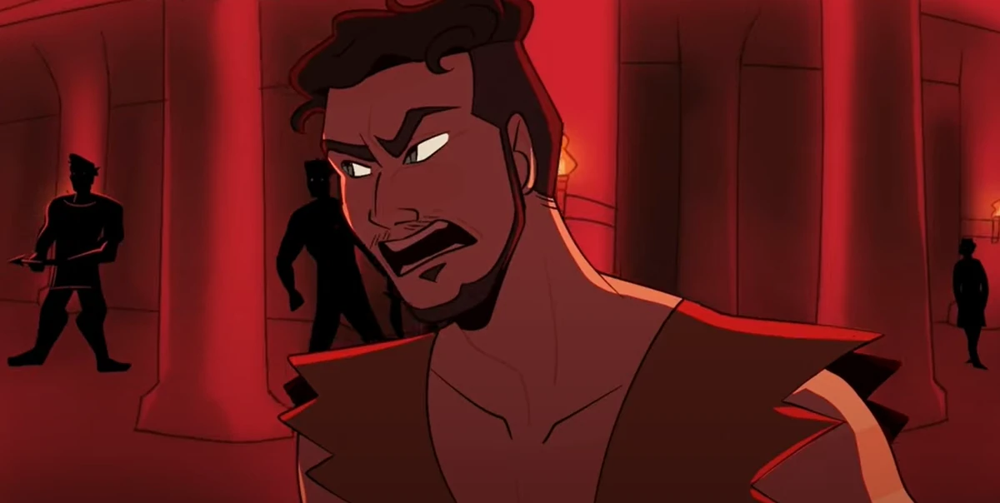

| Melanthios | |
|---|---|
|  | |
| Zeichnung von El_Crafts | |
| Biografie | |
| Zugehörigkeit | Königreich Ithaka |
| Freier von Penelope | |
| Status | Tot |
| Tod | von Odysseus mehrmals erstochen |
| Hinter den Kulissen | |
| Auftritte | Ithaka Saga |
| Original Stimme | Jamie Wiltshire |
| Deutsche Stimme | Rolle offen |
Melanthios
... - Melanthios (Odysseus)
Melanthios ist einer der 108 Freier von Penelope.
Biografie
Melanthios war ein Adliger, der einer der Freier von Penelope wurde und versuchte, der neue König von Ithaka zu werden. Als Odysseus nach Hause kam, machte der König Jagd auf ihn und die anderen Freier. Melanthios fand dann die Waffenkammer mit Amphinomos, bevor Telemachos Amphinomos tötete. Dies veranlasste Melanthios, den Rest der Freier und die offene Waffenkammer zu alarmieren und den Prinzen gefangen zu nehmen. Es kommt zu einem Kampf zwischen Telemachos und den Freiern, bei dem der tapfere Prinz die meisten von ihnen abwehrt und einige tötet. Doch Melanthios überrascht Telemachos und gewinnt den Kampf. Schnell wird er von Odysseus in den Rücken gestochen und bittet den König um Gnade. Als Odysseus erklärt, dass es keine Gnade mehr gibt, versucht Melanthios wegzukriechen, aber der König beendet es, indem er wiederholt auf ihn einsticht. Odysseus enthauptet dann seinen Leichnam, um zu demonstrieren, was mit denen geschehen wird, die ihm Unrecht getan haben.
Auftritte
Trivia
- In der ursprünglichen Odyssee war Melanthios der untreue Ziegenhirte des Odysseus, der oft die Freier mit Essen versorgte und alles tat, was sie von ihm verlangten. Er wurde von vielen der Freier bevorzugt, aber Eurymachos soll ihn von allen am liebsten gehabt haben.
- Sein Tod in der Vorlage war viel brutaler: Ihm wurden Nase und Ohren abgeschnitten und er wurde von zwei treuen Dienern des Odysseus kastriert.
- Im Song Odysseus scheint Melanthios, nachdem er die anderen Freier auf die Waffenkammer aufmerksam gemacht hat, der neue Anführer der Gruppe zu werden, bevor Odysseus ihn tötet.